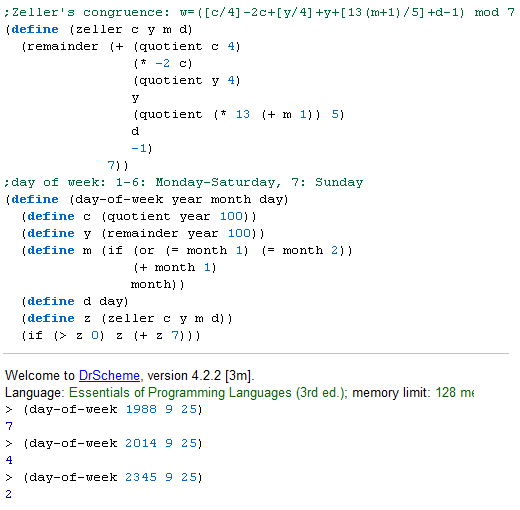
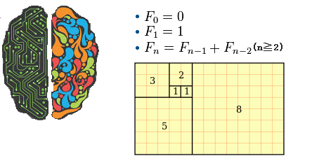
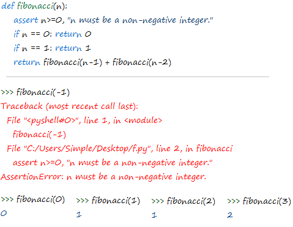
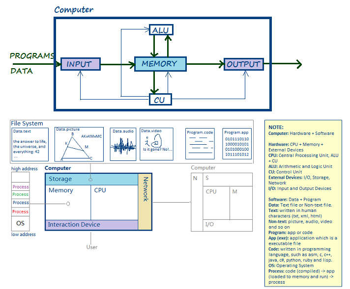

谨此献给敬爱的Claire，祝愿她家的想想健康快乐，聪明伶俐。
Problem Solver
我们天生就是问题解决者（也是问题制造者，哈哈），而不仅仅是工具使用者（使用工具是为了解决问题）。我们应该关注问题的定义，解决的思路，而不仅仅是既有工具的使用，更不要被工具限定了解决思路。先有好的思路，再选好的工具。问题的解决需要创造力（也是人最宝贵的东西），工具的使用需要说明书和耐心。别手拿锤子，就把一切当钉子砸。放下了锤子，螺丝刀，扳手，钳子，雪糕，佟丽娅，冯•诺伊曼，史丹利的寓言，图灵机才会浮现。
图与字
一图胜千言，图形的表现力远远胜于文字。可是作图绝非易事，是一门专业技能。要让大众也能轻易使用，就需要把图精简为易于书写的符号，于是就发明了文字。因为文字是被精心设计的符号，不易理解，所以要有专门的识字教育。当大众都受过教育，达成共识（所有变量符号在我们脑中都有同一定义），比如知道“水”就是水时，我们就可以随心所欲地交流，不会发生符号未定义的错误。随着科技的发展，人们已经能随时随地轻松拍照，“作图”似乎变得轻而易举，我们可以不失真地用照片描述远处的高山，路途的人和事，而不必较真该用哪个词贴切。不过内心活动依旧需要文字描述，写在照片上。照片是写实，写物叙事，平铺直叙，不涉及创作的部分。作图是一种创作活动，虚实结合，将不可能变可能，如同小说般天马行空，光怪陆离。当今两大神技化妆和P.S.把创作推到了极致，极大地改变了人们的价值观，世界观，人生观，影响了人们的生活方式。它们把虚幻带进了现实，从此再也不能说眼见为实，客观上也促进人们辨别力的发展，随着几代人的积累，也必将出现与相对论成就并称的辨伪科学指南。与另外两大神技变性和整容不同，化妆和P.S.无需伤及本体，即可出现神迹般的效果，一人千面，胜似神仙，可谓叹为观止。
人类语言的缺陷？
我们来玩一个游戏，随便在词典上找一个单词，然后从它的解释中又找另一个单词，然后跳到该词的解释，如此重复下去，最终会停止吗？比如我选了abyss -> hole -> space -> empty -> nothing -> anything -> something -> unnamed…只要我愿意，似乎遍历整个词典也无法停下来，意味着字典存在循环解释。这意味着英语字典不存在基元（如同公理般无需解释也无法解释，并以此作为余下词汇的解释基础）。我们查找某个单词的解释，并最终根据主观认识，停在某个点上，比如你停在hole，而我停在empty，如果是三岁小孩呢，他是如何认识abyss？
要知道1988-09-25是星期几，方法有：
A. 一直等到那天到来；
B. 搭时光机，顺便看看那天谁来到世上；
C. 以今天作为参考点，一直数到那天；
D. 徒手用Zeller公式计算：w = ([c/4]-2c+[y/4]+y+[13(m+1)/5]+d-1) mod 7；
E. 编写程序计算；
F. 翻看电脑或手机的日历。
Lisp程序：

编程关注对象：大脑，程序，计算机。
大脑

程序

计算机

编程活动：设计 => 编程 => 测试
设计：概要设计：图形化（手绘图，UML，流程图），详细设计：简化（伪代码）
编程：程序 = 数据 + 运算 = 字节 + 指令 = 变量 + 函数（在对象中） = 状态 + 行为（在模型中）
测试：来吧，真相只有一个：结果==期望？
Simple Liang
2015-09-25
Shenzhen